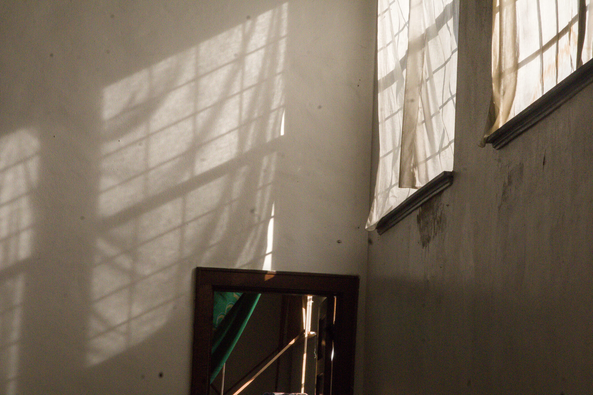
ZACKERY LAU · PHOTOGRAPHY
Shot
and
Framed.
Events, portraits, and the moments in between.
Explore the work ↓SELECTED WORK
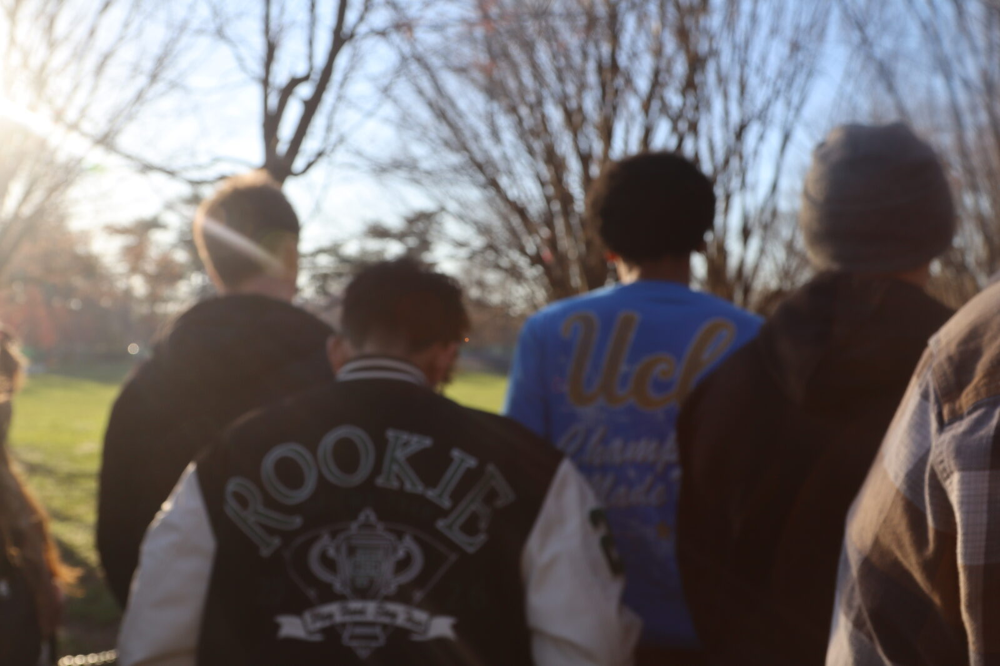
People.
Moments.
Stories.
When I look to frame a photo, I look for the memories that people get trapped in. Sitting right outside the frame, I do my best to find the moments where people are happy in their own world. Laughing, celebrating, and simply being together. Natural moments that just come about, where they are unburdened, where I get to look upon, take a snapshot, and pride myself in being there to see it.
THE GALLERY
My Gallery
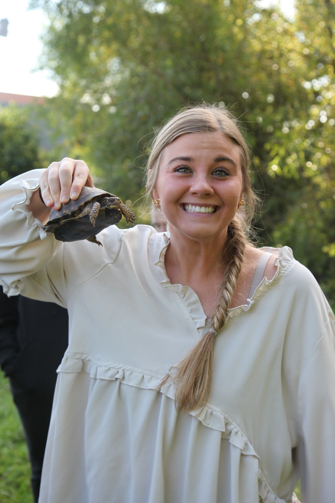
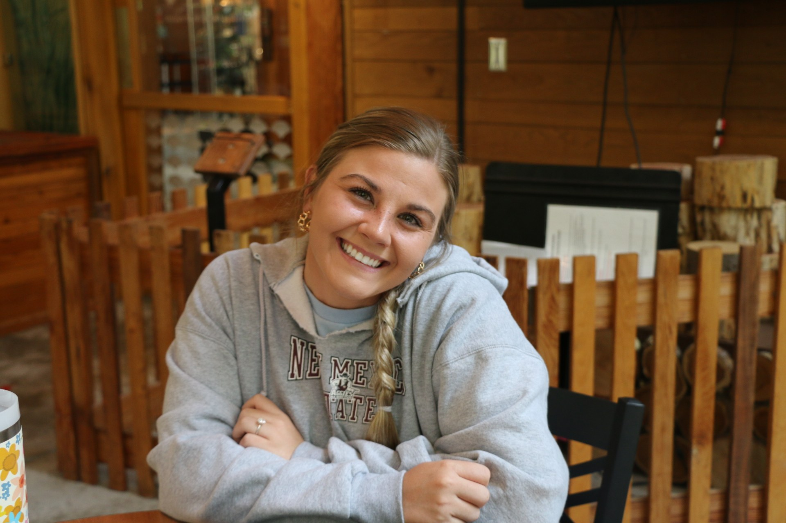
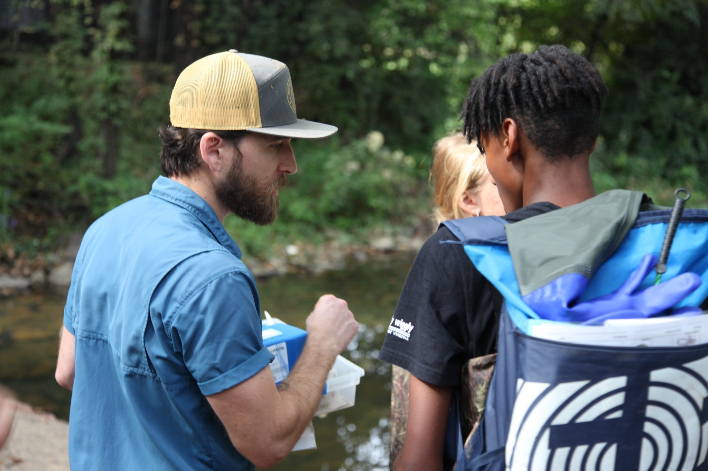
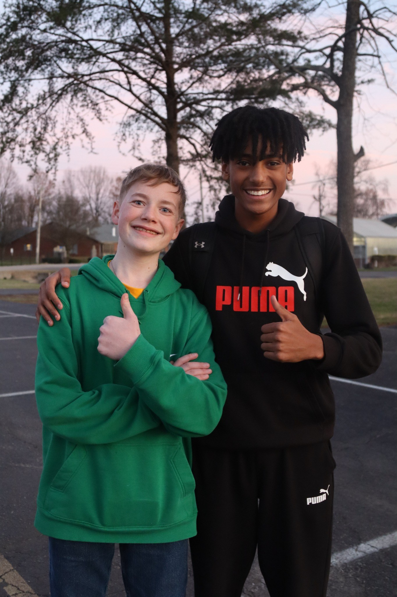
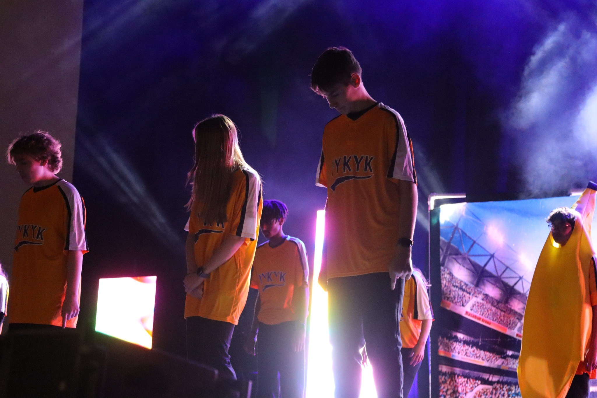
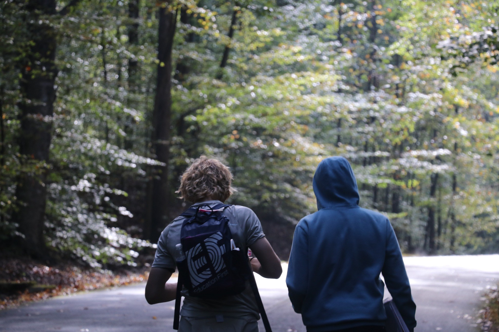
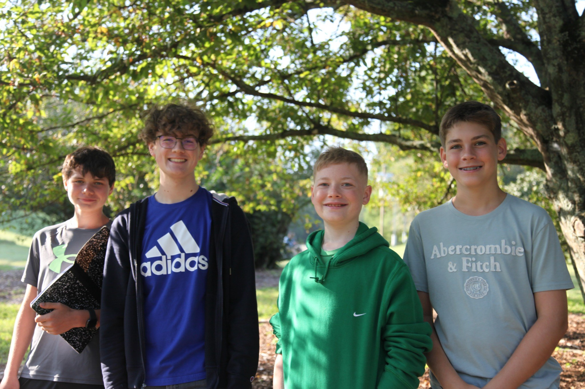
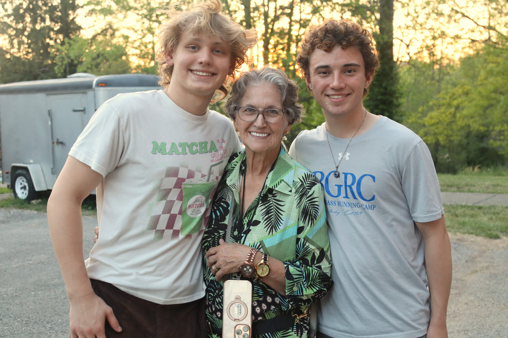
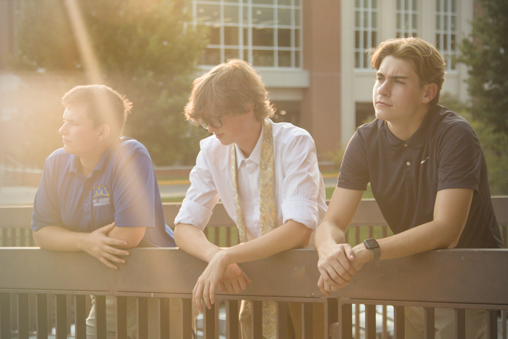
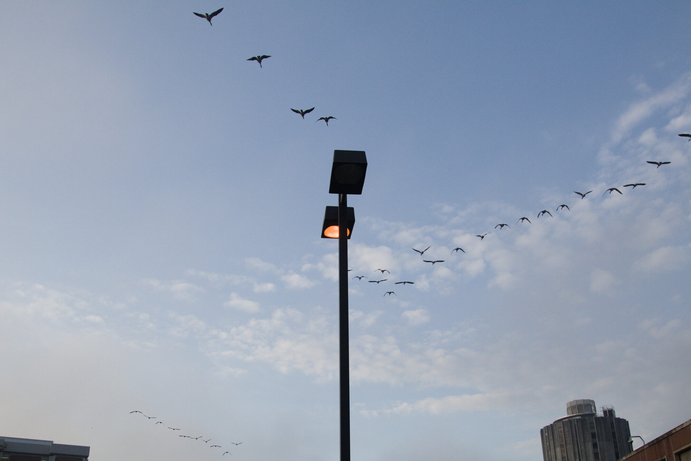
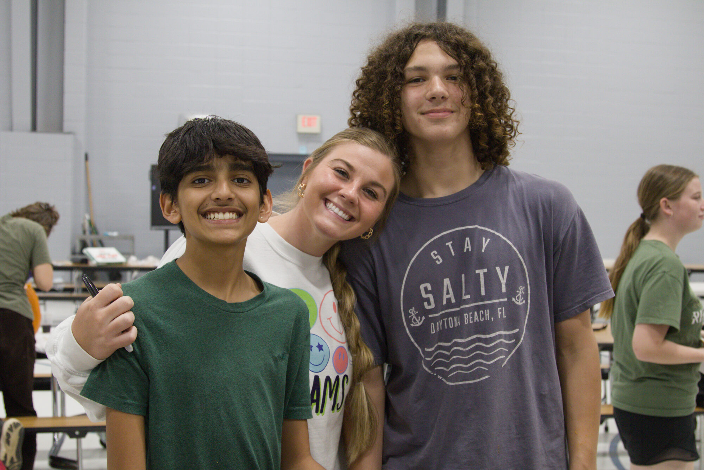
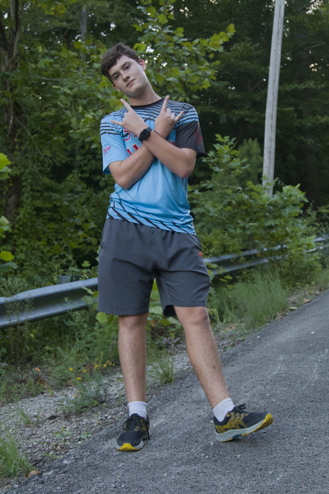
ABOUT THE PHOTOGRAPHER
Capturing the moments
worth remembering
My name is Zackery Lau. Around four years ago, I picked up a camera for the first time, a gift passed down from my grandfather in Hong Kong just as I was starting high school. That camera became the tool that pulled me out of my shell, gave me purpose, and opened a door into a world I couldn't be more appreciative of. Since then, photography has become a constant in my life. I've covered graduations, class trips, proms, formals, and countless moments in between. My expertise lies in candids, events, and portraits, the warm happiness of the room, the laughs and smiles, and the people who make an moment worth remembering.
WHAT I SHOOT
Events
School events, performances, competitions, celebrations, and everything happening around them.
Portraits
Individual and group portraits that keep personality at the center of the frame.
Stories
Candid coverage for projects, organizations, and moments where the people matter most.
GET IN TOUCH
Have something
worth framing?
Reach out by email or find more of my work on Instagram.